Мясорубка BORK M700
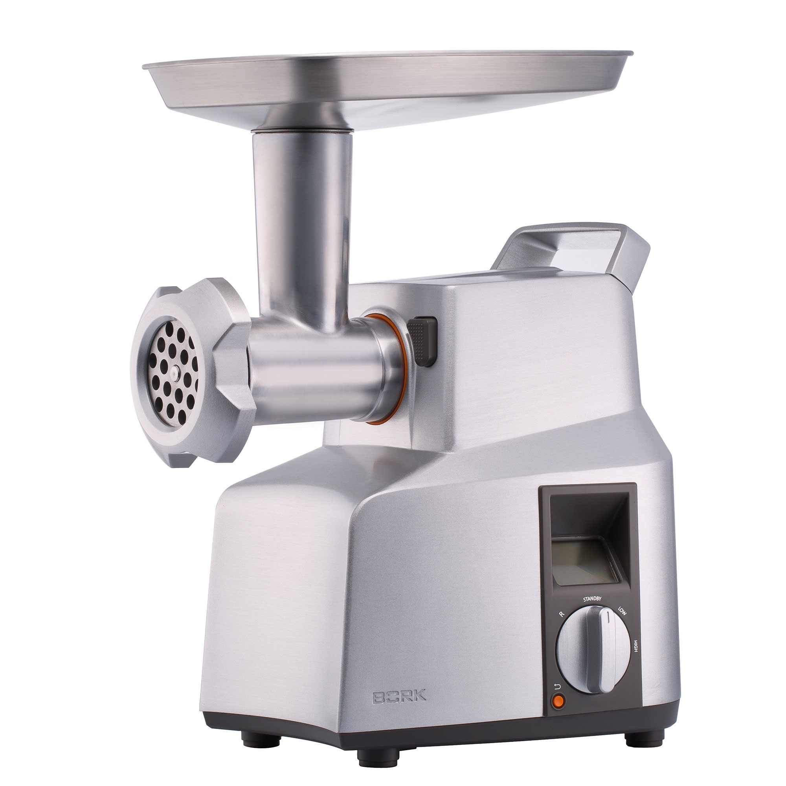Технические особенности
- Первая бытовая мясорубка с профессиональным блоком ножей
- Нож с 6-ю режущими кромками и волнообразной формой заточки
- 2 скорости работы и SMART реверс
- Система автоматического отключения двигателя при перегрузке и перегреве двигателя
- Использование посуды с высокими стенками
- Ручка для переноски
- Электронный стабилизатор оборотов
- Длина электрического кабеля: 1 м
- Страна производитель: Китай
Индикация и управление
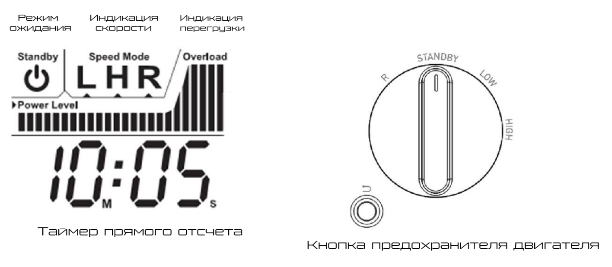Рабочий блок бытовой мясорубки
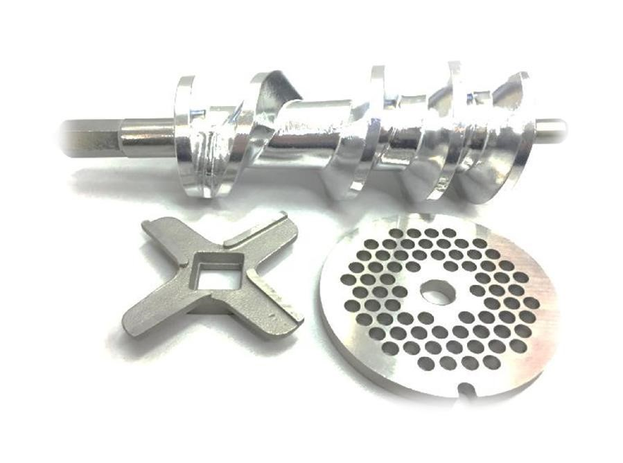Классический набор из шнека, одностороннего ножа и решетки. Такой набор ножей качественно выполняет простую резку мяса и подходит для домашнего использования.
Профессиональные рабочие блоки
В зависимости от объёма производства в профессиональных мясорубках используются два варианта ножей.
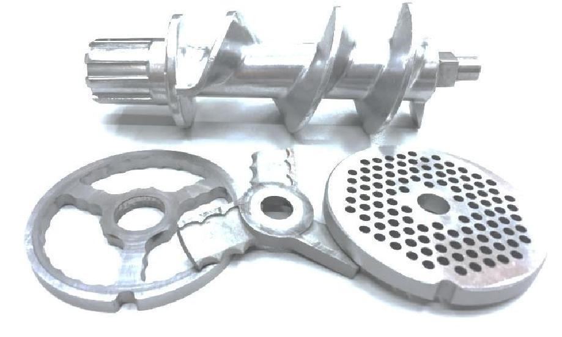1 Вариант обеспечивает более качественное измельчение мяса, так как в него помимо шнека и решетки входят подрезной нож и основной нож с двойной заточкой (работает в двух плоскостях одновременно). Мясорубка за один проход совершает двойную обработку мяса. При выборе соответствующей мощности мясорубка такой комплектации может использоваться для ресторана или небольшого пищевого производства.
2 Вариант этот набор ножей, позволяет всего за один проход получить качественный однородный фарш тончайшего помола. Достигается такой эффект благодаря входящим в комплект подрезному ножу, двум двусторонним ножам и двум решеткам. То есть на шнек поочередно установлены подрезной и двусторонний ножи, крупная решетка, снова двусторонний нож и мелкая решетка, а машина выполняет тройную резку продукта. Машины этого типа подходят для любых пищевых производств высокой производительности, а также для магазинов, продающих фарш.
Форма заточка ножей
Прямая
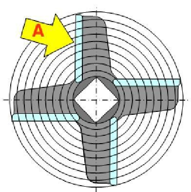Преимущество прямой формы заточки ножа - в процессе работы не происходит перемещения продукта от центра к корпусу рабочей части мясорубки. Мясорубка не забивается.
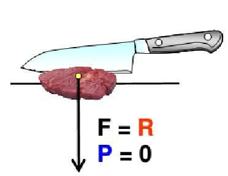Недостатком является невысокая эффективность резки.
Саблевидная
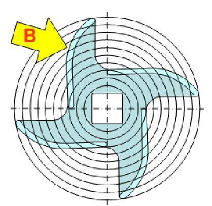Преимущество саблевидной формы заточки в более эффективной резке продукта.
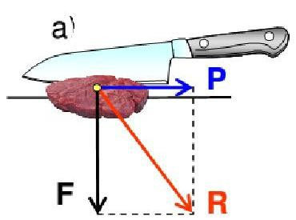Но недостаток в том, что в процессе работы продукт перемещается к корпусу рабочей части, что приводит к уменьшению проходного сечения корпуса перед решёткой. Мясорубка может забиваться.
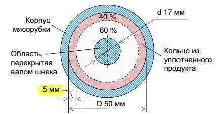За 10-15 минут, образуется плотное кольцо, сильно сужающее проходное сечение корпуса. Так при ширине этого кольца всего в 5 мм площадь сечения уменьшается на 40%, причем именно в периферийной, самой эффективной зоне резания.
Разработка ножа
Создадим новый нож, режущая кромка которого состоит из саблевидной и прямой заточки:
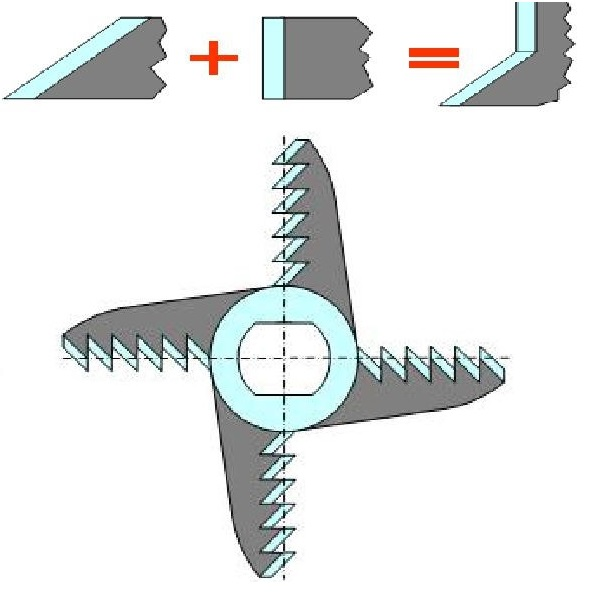Преимуществом является то, что нож такой формы одинаково хорошо годится для любых мясорубок, отлично режет и не перемещает продукт.
Недостаток: его будет сложнее изготовить, а режущие кромки труднее заточить.
Нас устроил бы нож, который перемещает продукт точно так же, как “саблевидный” (от центра), но в противоположном направлении " серповидный" (к центру).
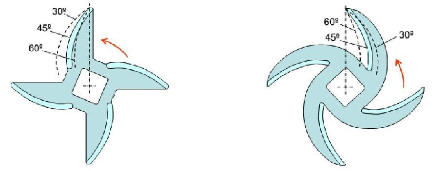Объединив эти два ножа мы компенсируем их недостатки, но оставляем преимущество каждого из них.
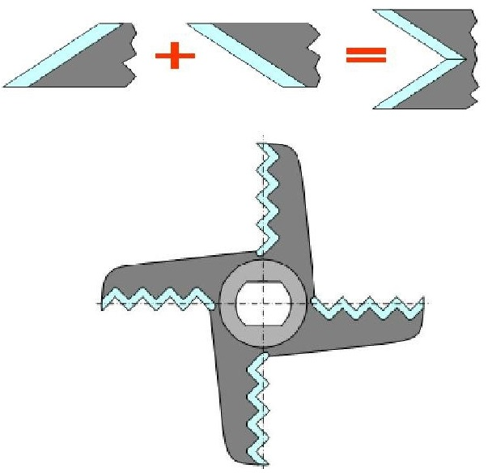Объединение двух ножей (саблевидного и серповидного). Преимущества: универсальность, он может долго резать продукт, из-за наличия острых зубцов на лезвиях ножа, процесс резания продукта становится легче, изготавливать такие ножи будет не сложнее тех, которые производятся в настоящее время (литье, горячая или холодная штамповка).
В мясорубке М700 используется волнообразная заточка ножей. Это оптимальный вариант объединения двух ножей (саблевидного и серповидного). В процессе рубки мяса участвуют 6 режущих кромок. Нож отлично режет и не забивает мясорубку!

Ножи сделаны из стали SUS 420J2 в промышленности из этой стали делают рессоры, подшипники, пружины для работы при температуре 400 - 450 °С. Широко применяется данный тип стали для изготовления ножей, профессиональных парикмахерских ножниц.
Шнек мясорубки BORK M700
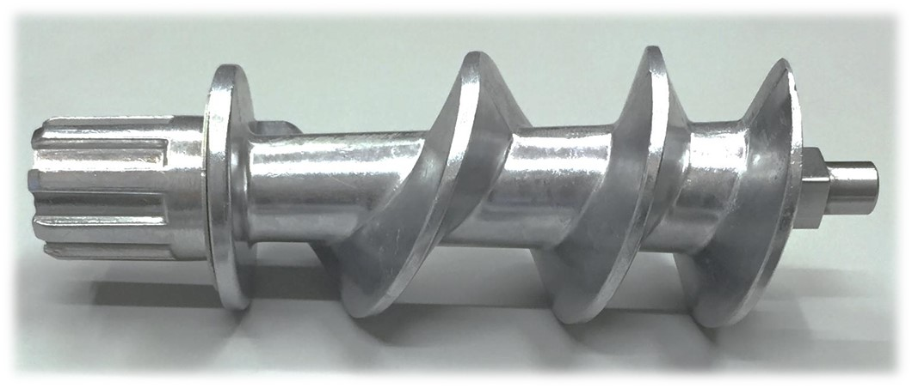Для равномерного, плотного распределения и сохранения сочности продукта мясорубка BORK M700 оснащена шнеком с 3-мя витками.
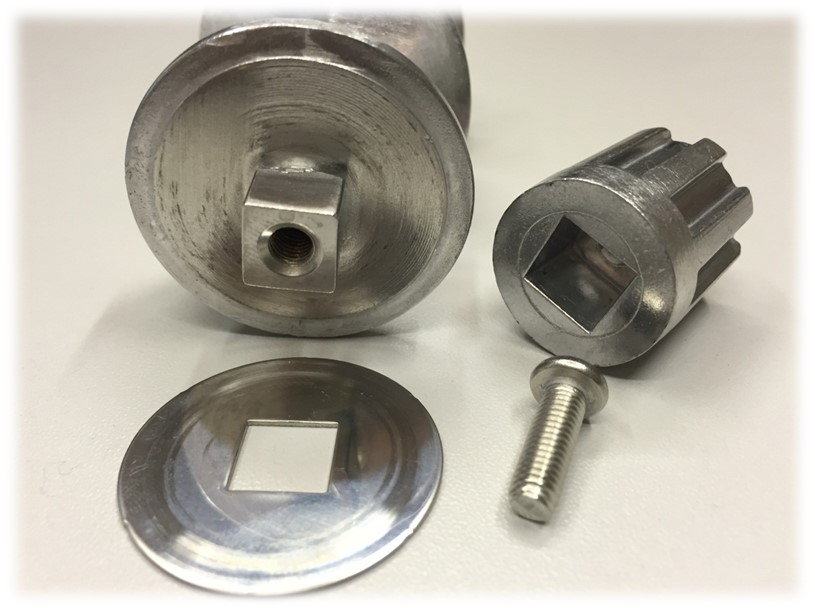Болт из нерж. стали надежно фиксируется в стальном сердечнике шнека.
Для увеличения надежности шайба выполнена из металла.
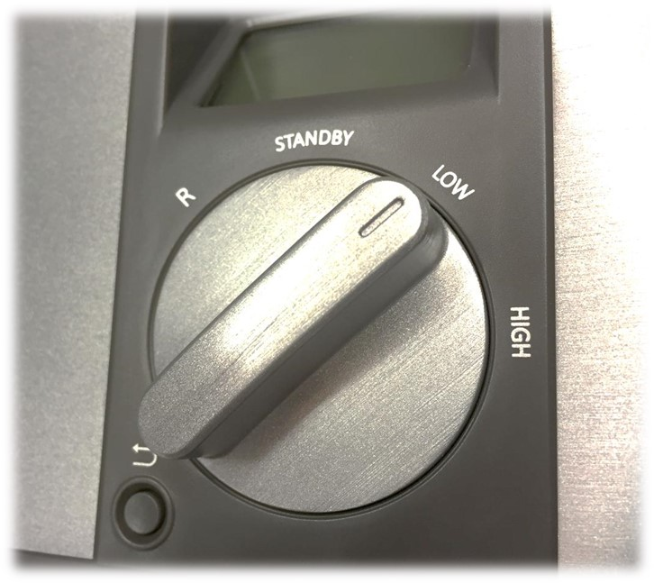2 скорости работы и режим SMART реверс.
Переведите регулятор в положение LOW (низкие обороты) для мягких продуктов и овощей или HIGH (высокие обороты) для твердых продуктов и мяса.
Переведите и удерживайте регулятор в положение R, чтобы включить вращение шнека (максимум на 5 секунд) в противоположном направлении (реверс). После возвращения регулятора в положение STANDBY.
Пока мясорубка полностью не остановится SMART РЕВЕРС не запустится.
При перегрузке сработает автоматическое отключение для защиты двигателя. Мясорубку можно будет использовать через 5 минут, нажав кнопку предохранителя двигателя.
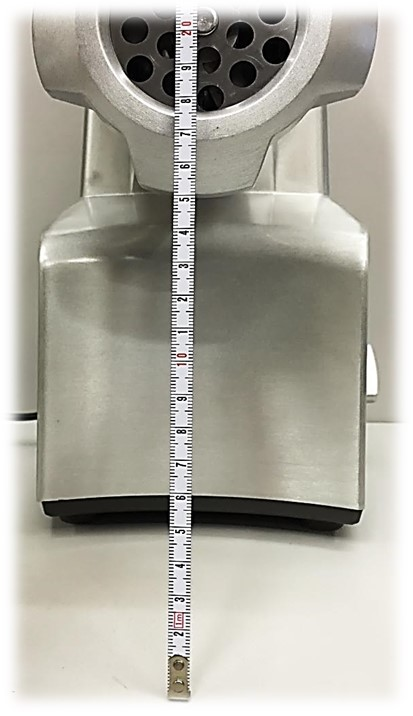Большое расстояние от стола до гайки крепежа решетки (15 см) позволяет использовать посуду с высокими стенками.
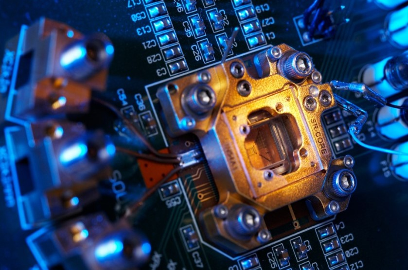Двигатель оснащён электронным стабилизатором оборотов. Это обеспечивает стабильную работу мясорубки с продуктами разной твёрдости и плотности.
Эргономика и хранение
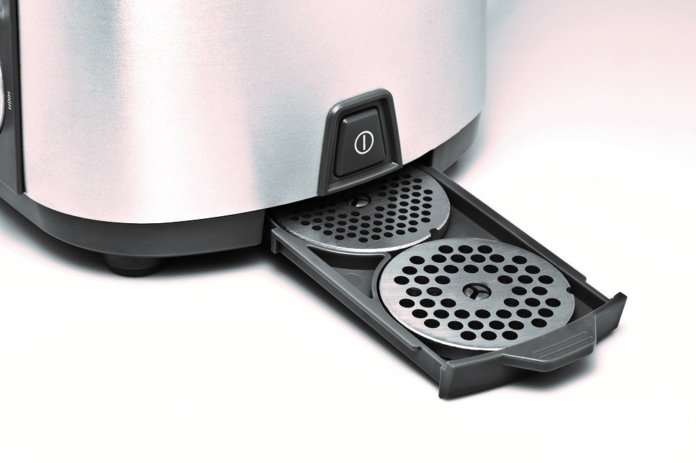 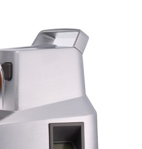Отсек для хранения решёток, и удобная ручка для переноски создают дополнительный комфорт при использовании мясорубки.
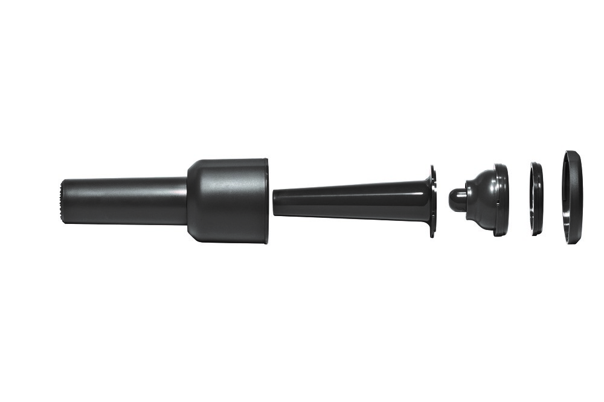Внутри толкателя для мяса можно хранить набор насадок для колбас и кеббе.
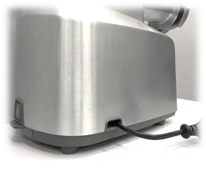После завершения работы шнур для питания (длина 1 м) легко убирается в корпус мясорубки.
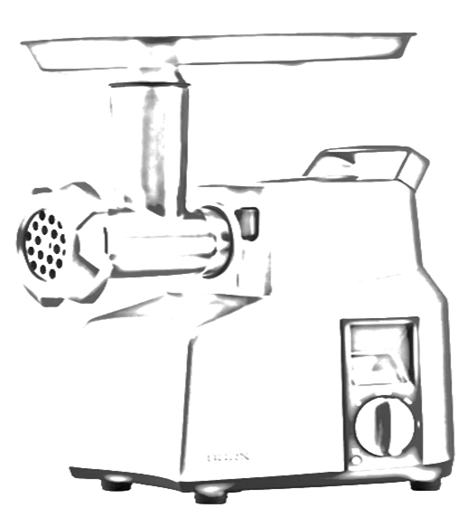Аргументы для продажи
- Профессиональный блок ножей
- Нож с 6-ю режущими кромками
- Новая волнообразная форма режущей кромки ножа
- Материал ножей – качественная легированная сталь
- 3 решётки для фарша (3, 5 и 8 мм)
- 2 скорости работы
- Smart реверс
- Использование посуды с высокими стенками
- Электронный стабилизатор оборотов
- Информативный LCD дисплей
- Таймер прямого отсчёта времени работы
- Шкала мощности и индикация перегрузки
- Защита от перегрузки и перегрева
- 2 тёрки и 1 шинковка
- Насадки для колбасы и кеббе
- Отсек для хранения шнура питания
- Отсек для хранения решеток
- Литой алюминиевый корпус
Технические характеристики
Мощность: 2300 Вт
Номинальная мощность: 800 Вт
Напряжение: 220-240 В
Материал корпуса: нержавеющая сталь
Цвет: нержавеющая сталь
Срок гарантии: 12 месяцев
Комплектация
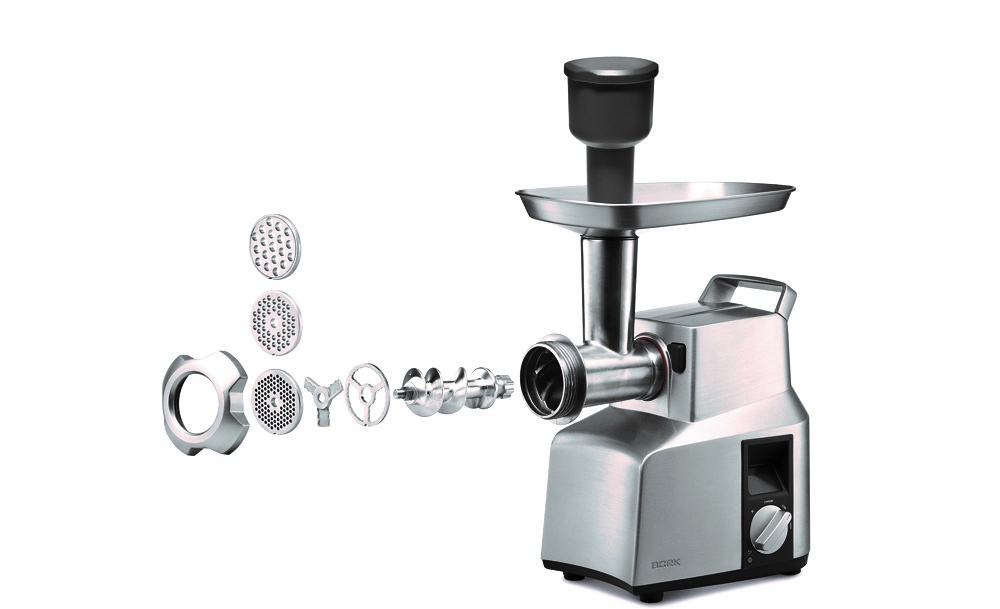- 3 решетки: 3 мм, 5 мм, 8 мм
- Крупная, мелкая тёрка и шинковка
- Насадка для приготовления колбас
- Насадка для приготовления кеббе
- Металлический загрузочный лоток
- Толкатель
- Инструкция на русском языке
- Гарантийный талон